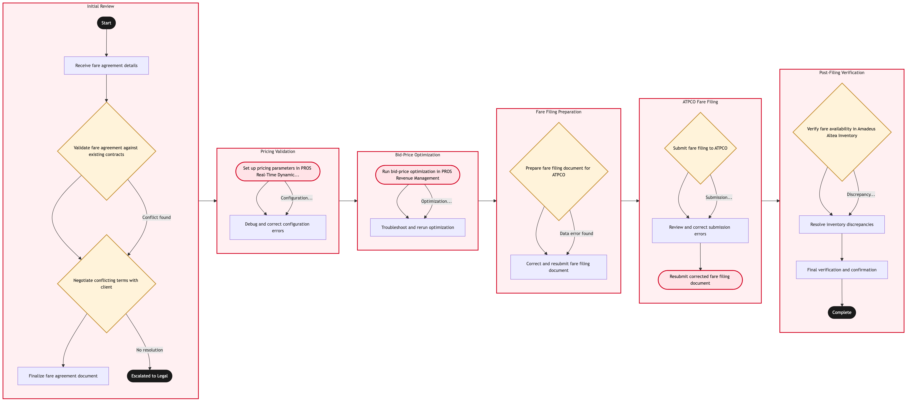

Updated 2026-08-20
Corporate and Negotiated Fare Administration
Process flow
Click to zoom

Process steps
▼
Phase 1 — Initial Review
4 steps
| Step | Activity | Role | System | Input | Output | KPI | Dec | Exc | Pain point |
|---|---|---|---|---|---|---|---|---|---|
| 1.1 | Receive fare agreement details | Corporate Client Services Agent | Air Canada CRM SystemU | Contractual details from client | Fare agreement document | 24-hour response time for initial review | N | N | Delays in receiving detailed contract terms can cause delays in pricing. |
| 1.2 | Validate fare agreement against existing contracts | Pricing Analyst | PROS Revenue ManagementB | Fare agreement document | Validation report | Within 48 hours of receipt | Y | N | Conflicting terms with existing contracts can require extensive negotiation and rework. |
| 1.3 | Negotiate conflicting terms with client | Corporate Client Services Agent | Air Canada CRM SystemU | Validation report | Amended fare agreement document | Within 72 hours of conflict discovery | Y | N | Client negotiations can be time-consuming and may require multiple rounds of back-and-forth. |
| 1.4 | Finalize fare agreement document | Pricing Analyst | PROS Revenue ManagementB | Amended fare agreement document | Finalized fare agreement document | Within 24 hours of negotiation completion | N | N | Errors in the finalized document can lead to additional review cycles. |
▼
Phase 2 — Pricing Validation
2 steps
| Step | Activity | Role | System | Input | Output | KPI | Dec | Exc | Pain point |
|---|---|---|---|---|---|---|---|---|---|
| 2.1 | Set up pricing parameters in PROS Real-Time Dynamic Pricing | Pricing Analyst | PROS Real-Time Dynamic PricingA | Finalized fare agreement document | Pricing rules and parameters | Within 48 hours of finalization | N | Y | Complex pricing rules can take longer to configure, impacting overall process timing. |
| 2.2 | Debug and correct configuration errors | Pricing Analyst | PROS Real-Time Dynamic PricingA | Error logs | Corrected pricing rules and parameters | Within 24 hours of identification | N | N | Errors can lead to inaccurate pricing, affecting revenue. |
▼
Phase 3 — Bid-Price Optimization
2 steps
| Step | Activity | Role | System | Input | Output | KPI | Dec | Exc | Pain point |
|---|---|---|---|---|---|---|---|---|---|
| 3.1 | Run bid-price optimization in PROS Revenue Management | Revenue Management Analyst | PROS Revenue ManagementB | Pricing rules and parameters | Optimized bid prices | Within 24 hours of configuration completion | N | Y | Bid-price optimization may fail due to system constraints or data issues. |
| 3.2 | Troubleshoot and rerun optimization | Revenue Management Analyst | PROS Revenue ManagementB | Error logs | Rerun optimized bid prices | Within 48 hours of initial failure | N | N | Optimization failures can cause delays in fare availability. |
▼
Phase 4 — Fare Filing Preparation
2 steps
| Step | Activity | Role | System | Input | Output | KPI | Dec | Exc | Pain point |
|---|---|---|---|---|---|---|---|---|---|
| 4.1 | Prepare fare filing document for ATPCO | Pricing Analyst | PROS Revenue ManagementB | Optimized bid prices | Fare filing document | Within 24 hours of optimization completion | Y | N | Incorrect data entry can lead to rejection by ATPCO. |
| 4.2 | Correct and resubmit fare filing document | Pricing Analyst | PROS Revenue ManagementB | Error logs | Corrected fare filing document | Within 24 hours of identification | N | N | Resubmissions can introduce additional delays. |
▼
Phase 5 — ATPCO Fare Filing
3 steps
| Step | Activity | Role | System | Input | Output | KPI | Dec | Exc | Pain point |
|---|---|---|---|---|---|---|---|---|---|
| 5.1 | Submit fare filing to ATPCO | Pricing Analyst | PROS Real-Time Dynamic PricingA | Fare filing document | ATPCO submission confirmation | Within 24 hours of preparation completion | Y | Y | ATPCO's system can be slow, causing significant delays in fare availability. |
| 5.2 | Review and correct submission errors | Pricing Analyst | PROS Real-Time Dynamic PricingA | Error logs | Corrected fare filing document | Within 48 hours of rejection | N | N | Incorrect data can lead to multiple rejections. |
| 5.3 | Resubmit corrected fare filing document | Pricing Analyst | PROS Real-Time Dynamic PricingA | Corrected fare filing document | ATPCO submission confirmation | Within 24 hours of correction completion | N | Y | Continuous rejections can cause further delays and operational strain. |
▼
Phase 6 — Post-Filing Verification
3 steps
| Step | Activity | Role | System | Input | Output | KPI | Dec | Exc | Pain point |
|---|---|---|---|---|---|---|---|---|---|
| 6.1 | Verify fare availability in Amadeus Altea Inventory | Revenue Management Analyst | Amadeus Altea InventoryA | ATPCO submission confirmation | Verification report | Within 24 hours of ATPCO confirmation | Y | N | Inventory discrepancies can lead to booking issues. |
| 6.2 | Resolve inventory discrepancies | Revenue Management Analyst | Amadeus Altea InventoryA | Verification report | Corrected inventory settings | Within 48 hours of discovery | N | N | Resolving discrepancies can require coordination with multiple teams. |
| 6.3 | Final verification and confirmation | Revenue Management Analyst | Amadeus Altea InventoryA | Corrected inventory settings | Final verification report | Within 24 hours of resolution completion | N | N | Missed final checks can lead to operational errors. |
Swim lanes
Corporate Client Services Agent1.1 1.3
Pricing Analyst1.2 1.4 2.1 2.2 4.1 4.2 5.1 5.2 5.3
Revenue Management Analyst3.1 3.2 6.1 6.2 6.3
Systems touched
Air Canada CRM SystemUPROS Revenue ManagementBPROS Real-Time Dynamic PricingAAmadeus Altea InventoryA
Key performance indicators
- Initial review within 24 hours
- Validation completed within 48 hours
- Pricing configuration within 48 hours
- Optimization rerun within 48 hours
- Fare filing preparation within 24 hours
Risks and control points
- Data entry errors leading to ATPCO rejection
- Bid-price optimization failures causing delays
- ATPCO system latency impacting fare availability
- Inventory discrepancies resulting in booking issues
- Continuous rejections increasing operational strain
Air Canada Process Wiki — process and systems reference compiled from public sources
for IT Application Management and User Support pre-sales discovery.
Built 2026-08-20. Every system carries an evidence tier: tier C is an industry pattern and tier U is an open
question, and neither should be asserted as fact about Air Canada without confirmation in discovery.
Not affiliated with or endorsed by Air Canada. Air Canada, Aeroplan and Altitude are trademarks of Air Canada.